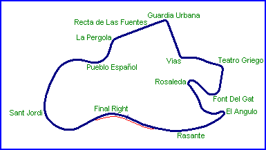
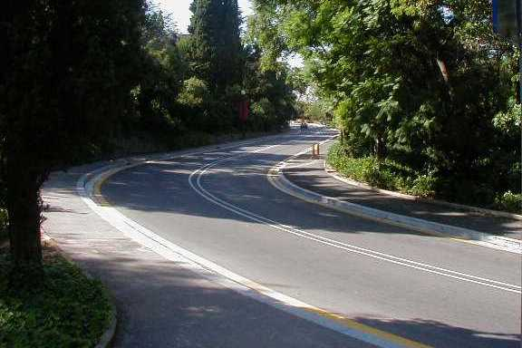
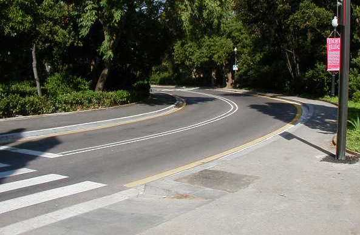
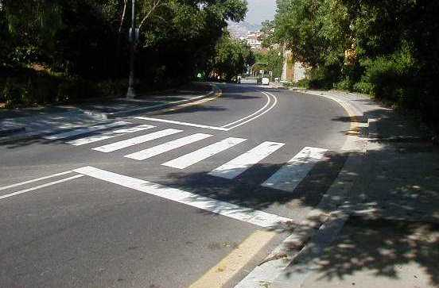

Font Del Gat
|| Contents | Start/Finish | El Angulo | Rosaleda | Font Del Gat | Teatro Griego | Vias | Guardia Urbana | Recta de las Fuentes | La Pergola | Pueblo Espanol | Sant Jordi | Final Right || Home ||


Looking back uphill from Font Del Gat

Font Del Gat entry

Font Del Gat exit
©2002 Chris Hall. Reproduced here with kind permission.